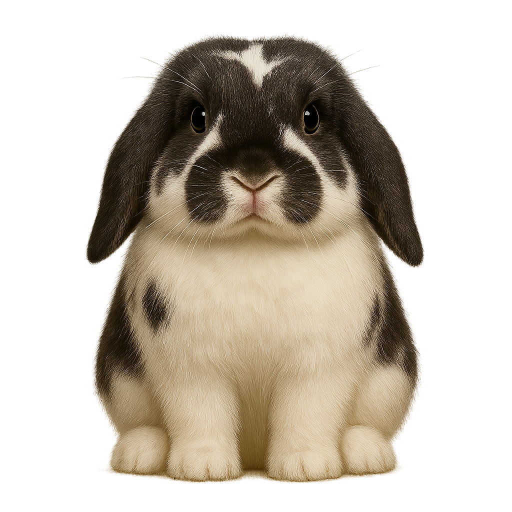

Fais défiler les lapins communs, ou tente ta chance avec un œuf pour espérer un rare, épique ou légendaire !
Les lapins rares, épiques et légendaires s'obtiennent en ouvrant des œufs, une fois chez toi (dans le Salon).
Choisis un vrai dossier sur ton ordinateur : chaque sauvegarde y sera écrite avec la date et l'heure dans son nom, et tu pourras recharger la plus récente. À refaire à chaque nouvelle session (le navigateur ne garde pas la permission après un rechargement).
